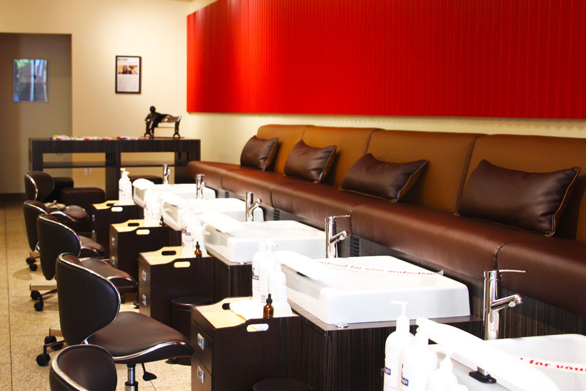

The inspiration to open Grit + Polish rose from reading an expose in the NY Times that documented exploitive working conditions in nail salons. We stand for the idea that beauty should be accessible to everyone and can only flourish in a clean and welcoming environment that lifts both employees and clients up.
A different kind of nail salon and a sanctuary for our clients, employees and community, we opened our doors in 2016 and are located in Princeton's historically diverse Witherspoon-Jackson neighborhood. Designed to look like no other, we are a vibrant hub that supports and celebrates the diversity of this area, while providing high quality services that nourish the body and soul.
Everyone deserves a respite from the hustle and bustle of daily life to reconnect with their beautiful self, and we hope you choose us as your favorite salon.
Employee friendly. We truly value our employees. They are paid fair wages, with family-friendly predictable work schedules, and paid time off after six months of employment.
Customer focused. Designed to deliver the best customer-experience possible, we offer complimentary beverages and free wifi.
Community partners. At Grit + Polish, we are seeking to build a community of customers and employees who believe in both feeling and looking good, a community well suited to our historic Witherspoon-Jackson neighborhood, and to the broader Princeton area.
Sanitation. Stainless steel implements are cleaned and disinfected with an environmentally friendly hospital grade disinfectant and then sterilized in a medical grade autoclave. We never reuse anything that cannot be sanitized. In addition, pedicure sinks are sanitized and disinfected with an EPA registered hospital grade disinfectant after each use.
Air quality. We want our employees and clients to breathe easy. No salon in Princeton has higher air quality standards than Grit + Polish. Each of our manicure and pedicure stations has a source capture system to remove fumes and particles from the air. We use Aerovex's Healthy Air® Nail Source Capture System, the next generation air ventilation technology, in our pedicure benches, to protect the breathing zones of nail technicians and clients to prevent overexposure to monomer, acetone, and associated acrylic vapors and dusts. Built-in exhaust fans are also in place in our manicure tables.
Green Cleaning. This is a cleaning process that protects health without harming the environment. We use green cleaning methods strive to maintain high levels of hygiene without introducing toxic substances to our bodies and our environment, or producing unnecessary amounts of landfill-bound.
Pedicure Bench. Our pedicure bench was custom designed by Michele Pelafas Inc., a leading design firm in the spa, beauty and medical spa industry. The bench's sinks are equipped with pipe-less jets. Pipe-less pedicure bowls and foot-baths were developed in response to more stringent health guidelines for spas. Purjet™ is the essential pedicure sink for custom spa, beauty and hospitality environments. Purjet™ combines a hydrotherapy foot-bath for a soothing and relaxing experience with the assurance of pure, clean water.